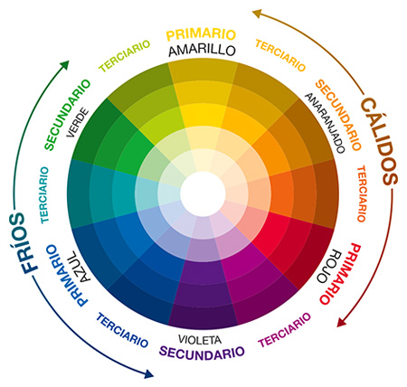

El color es un fenómeno físico capaz de producir varios efectos psicológicos. En estricto sentido, es una creación de nuestro cerebro porque el ojo humano sólo capta tres colores: el rojo, el azul y el verde. Todos los demás tonos son una sofisticada mez- cla que de alguna manera produce el sistema nervioso.
Newton y su clásico estudio de descomposición de la luz constituyen todo un hito en nuestro conocimiento del color; sin embargo, nuestra fascinación por la gama cro- mática había comenzado mucho antes. Por ejemplo, cuando los tintes eran escasos, la nobleza pagaba sumas astronómicas por conseguir prendas de color, ya que éstas eran un símbolo de poder. Algo que empezó a abaratarse con el descubrimiento de América. Además, hoy sabemos que tiene una influencia enorme sobre nuestro esta- do emocional. Tan es así que hoy existe un área del conocimiento llamada “psicología del color” que es esencial en determinadas profesiones, como la de decoradores de interiores.

Isaac Newton estableció la teoría del color cuando inventó la rueda de color en 1666. New- ton entendía los colores como percepciones hu- manas, no cualidades absolutas, de longitudes de onda de luz. Al categorizar sistemáticamente los colores, definió tres grupos:
■ Primarios (rojo, azul, amarillo).
■ Secundarios (mezclas de colores primarios: verde, naranja y morado).
■ Terciarios (o intermedios, mezclas de colores primarios y secundarios: verde azulado o rojo violeta).

■ Rojo: ambicioso, atrevido, poderoso, apasionado, activo.
■ Naranja: instintivo, optimista, extrovertido, carismático.
■ Amarillo: enérgico, alegre, amistoso, espontáneo, divertido.
■ Verde: crecimiento, próspero, esperanzador, restaurador, generoso.
■ Azul: contento, responsable, inteligente, autoritario, controlado.
■ Púrpura: creativo, imaginativo, distinguido, compasivo, devoto.
■ Negro: seguro, elegante, misterioso, autoritario, juicioso.
■ Blanco: sabio, puro, honesto, inocente, influyente.
